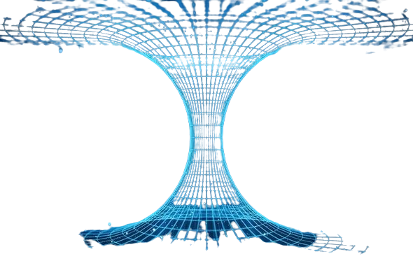
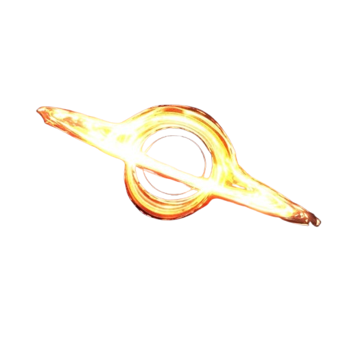

What is Time Travel?
Time travel means moving through time instead of just moving forward with it. Normally, we go from past to future without choice. Time travel asks if that flow can be changed.
How Could Time Travel Work?
Time and space are connected. If space bends, time bends too. Controlling spacetime could mean controlling time.
Traveling to the Future ⏩
Moving extremely fast or staying near strong gravity slows time for you. When you return, the world has aged more than you. This form of time travel follows known physics.
Traveling to the Past ⏪
Going backward is much harder. It requires time to loop back on itself. This risks breaking cause and effect.
Wormholes 🌀
Wormholes are theoretical tunnels through spacetime. They could connect different times. Most are believed to be unstable.

Black Holes 🕳️
Black holes bend spacetime extremely. Time slows down near them. They show that time is not fixed.

Paradoxes ⚠️
A paradox happens when time contradicts itself. Changing the past can erase the reason you changed it. This creates unstable timelines.
Famous Paradoxes 🧩
Grandfather Paradox: If you go back and kill your grandfather, you would never be born. So who traveled back to do it?
Bootstrap Paradox: If something exists without a clear origin, where did it come from?
The Limit
Theories explain possibilities, not consequences. Time may resist being changed. That uncertainty is the danger.